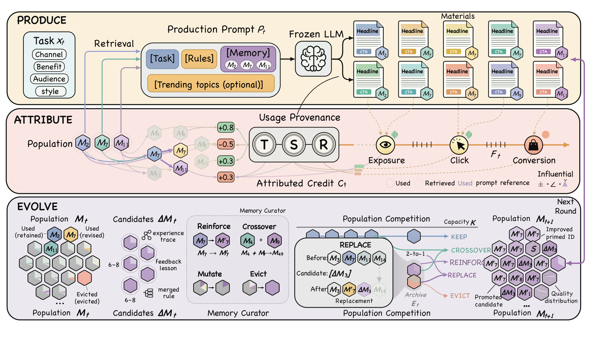
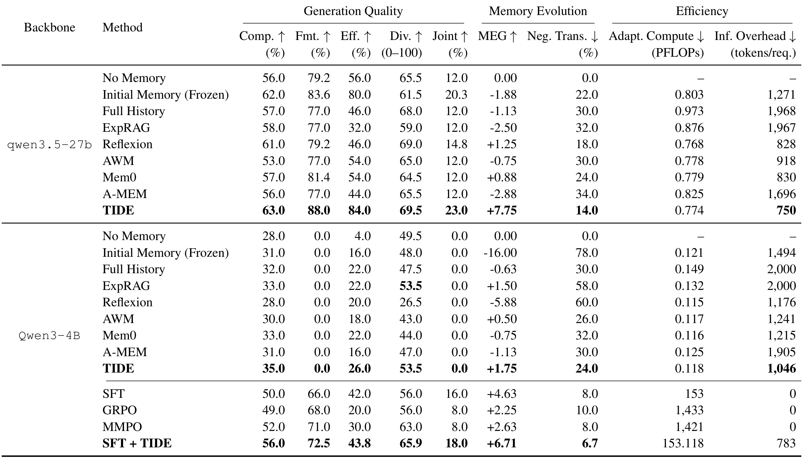
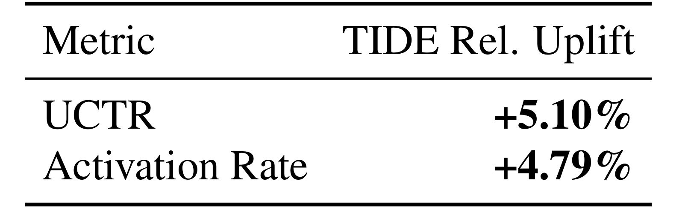
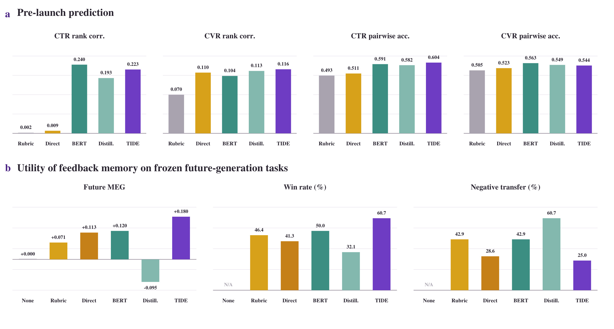
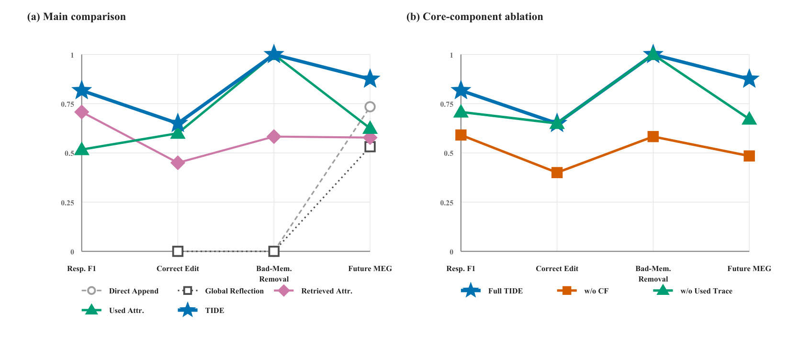
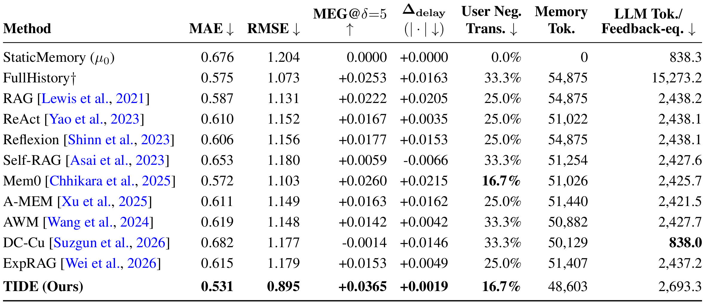
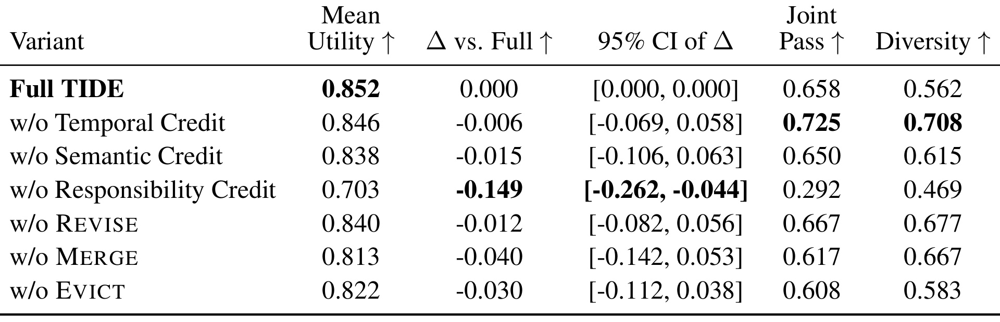
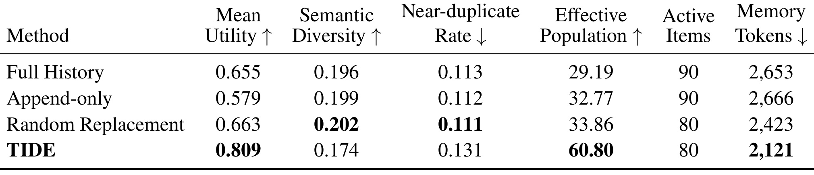
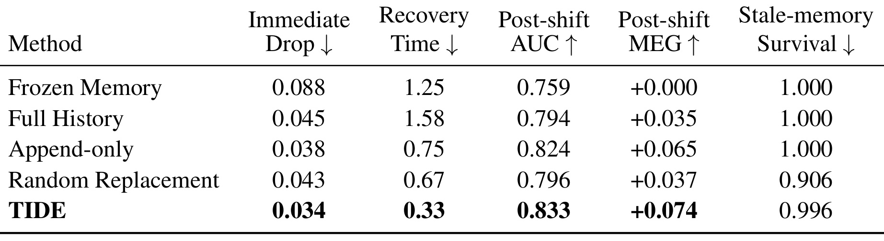

How Can Recommendation Feedback Evolve Agent Memory?：TIDE 如何用推荐反馈进化 Agent 记忆
TIDE 研究的是一种已经进入真实业务的内容生成闭环：大模型生成营销素材，推荐系统分发素材，用户点击或转化后，生成 Agent 再利用这些结果改进自己的外部经验记忆。论文由哈尔滨工业大学、阿里巴巴集团和中国科学院自动化研究所合作完成，Shanwen Mao 与 Mingming Li 为共同第一作者；首位作者的主机构为哈尔滨工业大学。本文依据 2026 年 9 月 29 日公开的 v1 原始论文，完整阅读主文及附录共 29 页，笔记整理日期为 2026 年 10 月 1 日。论文入口：arXiv 摘要页。目前没有独立核验到官方公开代码仓库。
推荐系统产生的反馈具有延迟、噪声和情境依赖性，会同时受到受众构成、投放位置及推荐策略影响，而且一份内容可能由多条记忆共同作用；现有依赖即时反馈或语义检索的记忆方法，难以可靠地把这些结果转化为能够改善未来任务的记忆适应度。
1. 背景和问题
1.1 从一次生成走向持续适应
电商会员营销中的内容生成，并不在模型输出一段文案时结束。一条标题、短文案、海报描述或行动号召，会进入素材库，再被投放到某个渠道和位置，接受不同用户群体的曝光、点击、购买和负反馈。模型最初得到的任务可能包含渠道、利益点、受众和语言风格等条件，而最后的业务结果来自完整分发过程。这个过程提供了比静态人工标注更贴近真实业务目标的监督，也使 Agent 有机会累积“什么内容在什么场景下有效”的经验。论文关心的是如何把这样的经验保存、修订和复用，而不是单次生成时如何写出一条更顺畅的营销句子。
持续适应有两条主要路径。第一条是把点击、偏好或奖励转化为训练样本，更新模型参数，例如监督微调、偏好优化或强化学习。这类方法能够改变模型行为，但反复训练有算力成本；任务和流量分布持续变化时，还需要防止模型追逐短期噪声或破坏已有能力。一次参数更新影响哪些经验，通常也难以逐条检查和回滚。第二条是保留生成模型参数，在外部存储交互轨迹、反思、工作流或经验卡片，生成时检索相关记录。这种方式可以单独审查一条经验、记录来源、收窄适用范围，并且撤销某一次记忆修改，因此更适合需要持续治理的业务 Agent。
但有外部记忆并不等于有可靠的学习过程。如果每次获得反馈就追加一段“这次效果很好”的总结，记忆会越来越长，重复和互相冲突的规则会一同进入提示。检索相似文案，也只能找到语义上相关的案例，不能自动说明为什么它有效。一次促销活动中的高点击，可能来自节日需求或流量扶持；相似文案在另一渠道可能无效。TIDE 的问题因此落在从业务结果到具体记忆修改的中间环节：先确认反馈是否成熟、是否可比，再解释内容差异，最后决定究竟该强化、修改或淘汰哪一条经验。
1.2 延迟、混杂与多记忆共同作用
时间上的困难首先来自结果并不同步返回。曝光之后可以很快出现点击，而转化可能延后；一个素材经历冷启动、小流量试投和流量扩大，各阶段的用户构成与推荐策略也可能变化。如果在点击刚刚增长而转化还未成熟时立刻给记忆加分，就可能把不完整生命周期中的局部现象当作稳定规律。另一方面，素材版本调整或推荐策略更新会打断前后阶段的可比性。论文因此要求围绕素材身份和版本连接反馈窗口，并把尚不成熟或不可解释的记录保持为待处理状态，而不是把所有已经出现的指标都立即当作可用监督。
情境上的困难来自结果由内容与环境共同生成。假设某一阶段所有素材的独立点击率都上升，目标文案只是其中一条，那么上涨可能与购物节预热有关。即使目标文案强调了一个利益点，也不能仅凭它同期表现较好就断言这个表达造成了增长。需要把产品、受众、活动阶段、投放位置和推荐版本相近的素材作为控制对象，同时保留季节、热点、流量桶等环境记录。只有相对优势与某个可编辑的内容决策形成一致证据时，才适合提炼为经验。这里的匹配和语言模型证据整理仍有假设，论文没有证明所有隐藏混杂因素都已消除。
责任分配又是另一层问题。生成一份素材时可能检索了很多记忆，其中有些根本没有进入实际文案，有些进入提示却没有影响被评估的决策，还有些共同决定了标题或行动号召。把整条反馈均分给所有检索结果，会强化无关条目；仅使用引用痕迹，也可能把“被提到”误认成“有贡献”。论文增加了删除一条记忆后的反事实重放，观察相应决策或评估效用是否变化。这个设计把检索、实际使用、语义对应和干预支持分开记录，但它检验的是固定生成设置下的输出变化，并不直接构成真实用户行为上的随机因果试验。
1.3 为什么未来任务与容量约束重要
记忆进化需要在未来任务上评价。如果一条经验由某次结果形成，随后又用同一素材或同一反馈给它评分，就很容易把记忆对历史案例的重述当作学习收益。TIDE 用严格未来任务上的效用差定义记忆进化增益，强调修改记忆的价值取决于它能否迁移到后续请求。时间切分同时约束初始化、反馈进化、验证和未来测试，模型或记忆构造时已经见过的样本不能进入最终未来评估。对于推荐和广告，这样的要求比随机拆分更贴近业务，因为投放结果迟到、流量策略变化和活动周期都会影响数据可用时间。
容量约束则让“保留什么”成为真正的选择。记忆不能通过无限堆积所有历史内容来获得更高信息覆盖，也不能为了缩短提示随意删除稀少但独特的经验。系统需要在可追溯的来源和版本下，对重复、冲突、失效和低适应度条目做治理。本文把记忆视为一个有上限的经验种群，允许新增候选、父记忆融合、局部修订以及选择淘汰。种群的适应度不是文字本身的漂亮程度，而是它在特定场景下得到的可靠结果证据。
这项研究与推荐系统的关系主要体现在推荐反馈驱动内容生成，而非直接替代推荐模型的召回或排序。外部记忆保存的是生成决策经验，业务结果通过延迟归因影响下一轮素材生产。它与大模型研究的交点是冻结生成器下的测试时适应、记忆责任定位和可回滚的经验更新。理解这个定位，可以避免把论文的离线评审收益误写成通用排序准确率提升，也能解释为什么作者同时安排未来内容质量、线上素材池实验、受控记忆噪声和延迟评分任务这几种不同证据。
2. 方法
2.1 冻结生成器、经验种群与未来效用
每次生成记录由请求、素材、完整反馈生命周期和记忆使用轨迹组成。请求描述需要生成什么，素材是生成器实际输出，生命周期记录投放过程中的结果与环境，使用轨迹记录哪些记忆被检索、被引用或参与决策。生成器参数在这一记忆进化过程保持冻结，更新策略只改变外部记忆种群。未来效用首先被定义为更新后接下来一组任务的平均结果，再与参考更新策略作配对比较。原文式（1）为：
符号解释：$\mu$ 是待评价的记忆更新策略，$\mu_0$ 是静态或其他参考策略，$H$ 是严格未来的任务数量，$\overline U_H$ 是在同一批未来任务上的平均效用。正值表示进化后的记忆比参考策略更有用。参考并非所有实验都相同：主内容生成实验以无记忆为参考，公开延迟评分任务以静态记忆为参考，分布变化实验以冻结记忆为参考。效用量纲也随任务变化，因此不同表中的数值不能直接横向排序。

Figure 2 从上到下展示生产、归因和进化三个阶段。上层以任务中的渠道、利益点、受众和风格为检索条件，把相关记忆与任务规则组合成提示，交给冻结的大模型生成多份素材。图中的记忆编号并非全部自动获得结果奖励：生成后的素材保留不同记忆参与标题或行动号召的痕迹，这些痕迹向下连接到实际曝光、点击和转化。中层的时间、语义和责任三个归因环节，把混杂且延迟的结果转化为对具体经验有条件的支持或反证；没有通过证据检查的记忆可以继续保留，但不能因为一份素材的表现就被随意加强。图中虚线使用关系、检索关系和影响标记各自代表不同信息，正是为避免把相似性、引用与贡献混为一谈。
下层表示更新后的候选不会直接堆积进提示。已有种群先与来自反馈或近期轨迹抽象的候选一起竞争，强化可以保持记忆标识并补充证据，交叉可以把互补经验融合，变异则通过收窄、修订或拆分产生新的适用规则，淘汰将低质量条目移出活动集合。右侧在固定容量下形成下一轮种群，并保留来源和版本关系。读这张图时需要把反馈闭环与梯度训练分开：图里的加分和记忆修订改变的是外部经验及其适应度记录，没有展示对生成器参数的反向传播。它也没有把反馈压成一个无条件总奖励，而是在归因时保留场景和多目标信息。图中容量符号使用 $K$，正文更新公式使用 $B$；二者都表达种群受限这一设计，不能据图示推断某个实验的实际容量数值。附录多轮实验才明确给出八十条活动记忆的上限。
2.2 生命周期成熟度与语义情境适应度
时间归因的输入是某次生成素材已经可观察到的完整轨迹，输出是生命周期对齐的多目标结果摘要，以及一个是否可以继续归因的有效性标记。原文式（2）为：
符号解释：$i$ 是生成事件编号，$T_i$ 包含素材版本、阶段性曝光、参与和转化结果及同期环境，$C_{\mathrm{temp}}$ 是时间归因算子，$\widehat{\mathbf u}_i$ 是多目标生命周期摘要，$z_i^{\mathrm{temp}}$ 表示证据是否成熟、连续并足够可比。只有素材身份和版本一致、必要投放阶段已经被观察、延迟转化有足够返回时间、素材或推荐策略变动没有破坏解释链时，记录才进入后续步骤。否则记录仍待处理，当前轮不能提供反馈驱动的适应度。
这一步不强制把点击率、转化率及不确定性压成一个标量。一个素材可能点击更高却转化更低，摘要需要保留各目标及其生命周期变化，让后续模块解释差异。它也不是固定等待若干秒就自动完成，而是依赖可解释的业务阶段和版本连续性。若真实系统缺乏完整的素材版本日志和推荐状态记录，即使延迟已经过去，时间有效性仍无法可靠判断。成熟度门控因此既减少误更新，也可能延缓学习速度；论文的思路是宁可保留待归因记录，也不要把未成熟结果写成永久经验。
语义归因接收素材、成熟结果、匹配控制集合和环境记录，输出上下文适应度、结构化决策证据及语义有效性。原文式（3）为：
符号解释：$a_i$ 是目标素材，$N_i$ 是历史或同期的匹配控制素材，$E_i$ 是活动、季节、热点、流量桶与推荐状态等环境，$\widehat{\mathbf f}_i$ 是相对匹配控制的多目标情境适应度。证据 $e_i$ 中，$d_i$ 表示利益点选择、信息密度、语言风格或行动号召等可编辑内容决策，$c_i$ 表示适用的投放条件，$s_i$ 保存支持或反驳该决策的材料和结果链条。$z_i^{\mathrm{sem}}$ 判断这条证据是否充分、一致并稳定。
语言模型在这里组织证据链，评价规约负责定位内容决策；它不能凭语言流畅度替代控制素材。作者给出的逻辑是：如果目标与控制素材在购物节预热期一起出现独立点击率上涨，共同变化先被视为环境关联；只有目标仍有可解释的相对优势，并且这种优势与特定内容决策相联系，才形成正证据。当控制样本不足、目标冲突无法解释、相对适应度不稳定或反例未被解决时，语义门控失败。输出因此是带条件的经验，而非“某个句式永远有效”。原文没有给出一个可以消除全部混杂的统计估计器，匹配质量与证据一致性仍是实现中需要审计的部分。
2.3 责任归因与有来源的种群更新
通过前两级门控后，还需要把决策证据映射到具体记忆。责任的必要条件是实际使用、与目标内容决策对齐，并且删除它后相应决策发生变化。原文式（4）写为：
符号解释：$m$ 是记忆条目，$M_t$ 是当前种群，$G_i$ 是记忆使用轨迹，$\operatorname{Used}$ 返回实际使用的记忆，$\operatorname{Align}$ 判断记忆与证据中的决策是否对应，$\operatorname{CF}$ 是删除单条记忆后的反事实重放检查，$R_i$ 是通过三项检查的责任集合。集合可以包含多条记忆，论文没有要求把一份结果强行归给唯一条目。仅被检索但没有改变目标决策的记忆不获信用。
归因状态取零、一、二三个离散值。零表示责任不可验证，不发生反馈驱动更新；一表示至少一条现有记忆通过责任检查，对这些条目累积情境适应度和证据；二表示证据及使用轨迹有效，但已有记忆并不覆盖这一决策，可以生成无父记忆的暂定候选。没有找到责任记忆并不自动等于发现新知识，因为轨迹缺失或证据不充分也会导致无法定位。确认新颖性比“没有匹配到旧记录”要求更严格。
反馈候选来自现有记忆的强化、收窄、修订、拆分或互补融合，周期性抽象还从有效近期轨迹与当前种群中产生候选。原文式（5）总结最终更新：
符号解释：$B$ 是记忆容量上限，$C_i^{\mathrm{fb}}$ 是当前事件反馈形成的候选，$C_t^{\mathrm{abs}}$ 是周期性抽象候选，治理选择算子执行有效性过滤、去重、冲突解决、失效处理和容量限制。候选携带暂定适应度、来源、父条目与版本信息，后续反馈才能决定是否进一步推广或删除。这个算子是系统治理接口，原文没有证明它等价于某个全局最优的组合搜索。
附录提示模板对更新做了具体约束。强化只能添加证据支持的结论，保留原义和记忆标识；交叉必须处理适用场景及例外，不能把不兼容渠道或受众的经验拼接；变异优先改动最小的错误或过度泛化部分，情境不同应收窄或拆分而不是全局覆盖；淘汰不能仅因为条目旧或检索频率低，还要保护覆盖独特任务的经验。责任实验中的反事实重放采用温度零，单独记录删除后输出决策变化与效用变化，而且只有删除后效用正向改善才触发编辑。这比一般责任定义更具体，评价效用仍来自冻结评审而非实时用户干预。算法也允许在反馈门控失败时进行有效近期记录的周期性抽象，因此“没有该事件的反馈更新”不意味着整个系统绝无记忆变化。
3. 实验结果
3.1 严格未来请求上的内容质量与计算口径
主离线实验按时间切分记忆初始化、反馈进化、验证和未来测试。相同生成骨干下，各方法共享任务顺序、反馈预算、候选数量和测试请求；记忆方法还共享初始记忆、检索器、检索数量及容量限制。未来测试包含五十个冻结请求，每个生成十份素材。冻结的 DeepSeek-V4-Pro 评审去除方法身份后，评价合规、格式、效率和多样性，四维归一化到零至一百分，任务效用为等权平均。MEG 是与无记忆在相同请求上的配对效用差，负迁移是效用低于无记忆的请求比例。它们都不能解释成真实点击或转化收益。

Table 1 的上半部分使用 qwen3.5-27b。TIDE 的合规、格式和效率分别为百分之六十三、八十八和八十四，多样性为六十九点五，联合通过率为百分之二十三；无记忆的联合通过率为百分之十二。这里联合通过率差是十一个百分点，而 MEG 为正七点七五个百分点，两者是不同统计量。冻结初始记忆虽然联合通过率有百分之二十点三，MEG 却为负一点八八，说明一个合格阈值指标变好不保证四维平均效用提升。完整历史、经验检索与部分记忆系统也出现负 MEG，支持作者关于未经治理的经验可能带来负迁移的动机。TIDE 仍有百分之十四的请求发生负迁移，结果没有证明每个未来请求都受益。
下半部分暴露了生成骨干能力的限制。Qwen3-4B 的所有纯记忆方法格式指标都为零，联合通过率也都为零；TIDE 的平均效用收益虽为正一点七五，却没有修好基本格式遵循。参数训练可以改善这一点，监督微调的格式通过率为百分之六十六。监督微调结合 TIDE 后，格式为百分之七十二点五，联合通过率为百分之十八，MEG 为正六点七一个百分点；这个 MEG 是相对无记忆，不是比监督微调再增加六点七一个百分点。监督微调自身 MEG 为正四点六三，二者差为二点零八个百分点。联合系统的负迁移降到百分之六点七，提示记忆治理与基本能力训练可以互补，但不能用记忆替代生成器缺少的能力。
成本列也需要保持比较边界。同骨干按统一稠密 Transformer 规则估计计算，前向近似随参数量与 token 数的乘积增长，完整参数训练使用更大的系数；这些 PFLOPs 是核算估计，没有测量真实硬件吞吐或墙钟时间。二十七 B 与四 B 骨干规模不同，不能把两组成本直接当作同一系统效率排名。二十七 B 组中 TIDE 推理记忆开销为每请求七百五十 token，低于冻结记忆的一千二百七十一，但适应计算零点七七四 PFLOPs 与其他记忆方法相近，并非都最低。四 B 组监督微调加 TIDE 的估计为一百五十三点一一八 PFLOPs，只比监督微调的一百五十三增加零点一一八；这一增量优势仍依赖既有训练已完成的前提。
3.2 一周线上素材池随机比较

Table 2 是全文最直接的业务证据，但只有两个相对结果。线上试验持续一周，符合条件的流量通过平台预设分流机制随机分配。对照使用直接积累经验支持的现有素材池，处理组引入 TIDE 生成的素材，同时固定基础模型、商品池、 符合试验条件的受众、投放位置、候选数量和分发机制。作者在结果分析前指定三个有非零 TIDE 素材曝光的处理桶，合并后与不含这类素材的控制桶比较；用于检查分流稳定性的 AA 桶不纳入处理估计。附录明确说明没有根据观察到的效果事后挑选、删除或改派试验组，这一点关系到避免只报告幸运流量桶的风险。
独立点击率的相对提升为百分之五点一零，激活率的相对提升为百分之四点七九，两项作者报告的双侧显著性均小于零点零零一。相对提升定义是处理组比率除以对照比率后减一，因此不是增加五点一或四点七九个百分点。若没有对照基础比率，无法从这些数字算出处理组绝对点击率或绝对激活率，更不能推断具体新增人数。论文表示使用组计数与比率，通过相对风险的 delta 方法计算近似置信区间与显著性；绝对流量和商业基础率因保密仅保留内部审计，公开文本未给出足以独立复算的计数和具体区间。
试验回答的是向现有素材池引入进化素材后，整体分发结果是否改善。由于记忆进化改变素材供给，业务效果包含素材内容及其与分发系统的交互，不能把整个提升全归给某一个责任算子。论文没有在线逐一移除时间、语义和反事实模块的试验，也未证明同一幅度会在其他季节或会员业务持续存在。首页系统示意图中出现的流量、点击率和 GMV 增长数字明确标为演示值，不能充当额外结果。对这张表的合理判断是：它提供了真实部署环境中的随机比较支持，同时把独立复算、绝对增量、长期收益和单模块因果解释留作公开证据缺口。
3.3 预测代理与未来生成收益并不等价

Figure 3 上排比较投放前的点击与转化排序代理，下排比较这些方法提炼出的反馈记忆能否改善未来生成。排序实验有二十八个等权渠道与利益点任务，每个任务五个候选素材，共一百四十份。点击排序保留全部任务，转化排序排除五个候选转化率完全一致而不能构成有效排序的任务，剩二十三个。各模型构造和标签聚合服从预测时间截断，只能使用已经成熟的历史证据。宏平均让每个任务权重相同，不由流量最大的任务主导。BERT 和蒸馏推荐器仅在截止前的历史投放数据上训练，因此它们代表语义预测与曝光反馈预测的不同路线。
上排结果不支持 TIDE 在所有代理指标上最佳。它的转化排序相关为零点一一六、点击成对准确率为零点六零四，分别是对应最佳；但 BERT 的点击排序相关零点二四零高于 TIDE 的零点二二三，转化成对准确率零点五六三也高于 TIDE 的零点五四四。下排却显示 TIDE 的 Future MEG 为正零点一八零，胜率百分之六十点七，负迁移百分之二十五，具有最强的整体未来生成收益。蒸馏推荐器在排序上并非失效，但它转成记忆后的未来效用为负零点零九五、负迁移百分之六十点七。这说明预测某份已有素材的效果，与提供能指导下一次生成的可操作经验，是两个不同目标。
下排固定生成器、提示主体、解码参数、候选数量和六千字符上下文限制，只改变反馈记忆，每个任务再生成五份素材。评审以约束满足、清晰度、利益点准确性和说服力四个零至十分维度计算等权效用，与主实验的合规、格式、效率、多样性评审不同。因此这里的正零点一八零不能直接与 Table 1 的正七点七五个百分点拼接或计算相对增幅。统计使用一万次配对任务 bootstrap，任务是重采样单位，保留同一任务内输出的相关性。这个实验支持记忆应围绕未来行动价值构造，而不是仅最大化一个预测代理；小规模任务及语言模型评审仍限制外推。
3.4 受控噪声中的责任定位和定向编辑

Figure 4 的左侧比较直接追加、全局反思、检索归因、实际使用归因与完整 TIDE，右侧移除反事实重放或使用轨迹。二十个受控模拟请求的初始记忆被注入近重复、过时、冲突、跨场景困难负例和误导反馈五类噪声。完整候选池约六千零九到六千一百五十一估计 token，注入部分不超过两千 token。注入条目及预先规定的编辑操作形成责任定位的受控真值。每种方法对每个请求生成十份素材，采用同一冻结评审与规约，未来收益仍与同一冻结请求上的无记忆配对比较。这个设置允许判断“改对哪条记忆”，但噪声和真值是构造的，不能直接代表真实生产中的所有错误。
完整系统责任 F1 为零点八一七，正确编辑率零点六五零，未来 MEG 为正零点零七五零；在十二个明确有害记忆请求中，坏记忆残留为零。图把指标方向统一为越高越好，所以横轴的坏记忆项显示移除能力，不能把高柱误读成残留越多。正确编辑要求身份和操作都正确，比只找到问题条目更严格。检索归因的弱点在于把相关但未参与决策的条目也纳入责任，实际使用轨迹先缩小范围，再用温度零的删除单条记忆重放检验其影响。作者只在删除后评估效用正向变化时触发编辑，避免把任何文字改变都当作应该删改的理由。
移除反事实后，责任 F1 降到零点五九一，正确编辑率降到零点四零零，坏记忆残留增至零点四一七，未来 MEG 变为负零点零零三一；移除使用轨迹后，责任 F1 为零点七零八，未来 MEG 为正零点零三四四。两项组件均有支持，其中反事实的下降更大。但这一结论属于同一受控噪声协议，删除条目影响生成器输出与评审分数，并不等价于对真实用户做干预。零坏记忆残留也仅覆盖人工定义的十二个有害子请求，不能写成系统永不误留错误经验。对工程实现而言，图里可复用的是证据链：先记录真实引用，再验证决策变化，最后把编辑的身份、类型和未来收益同时验收。
3.5 人为延迟标签的公开评分任务

Table 3 将问题从营销素材生成扩展到用户评分预测。作者保留 MemoryCD 原始样本、标签、用户历史和时间顺序，改变的是标签释放时机。主要设置为每次预测五个任务步后才释放真实标签，不能把这种人为协议称为原始数据天然包含五步延迟。每位用户前百分之八十的交互用于记忆进化，随后设置五步冷却区间释放尚未返回的反馈，再冻结记忆在最后百分之二十交互上测试；测试标签不参与更新。各方法共享时间序列、可用反馈预算、检索数量和记忆容量约束，使用按用户聚类 bootstrap 保留同一用户交互的依赖结构。
TIDE 的平均绝对误差为零点五三一，均方根误差为零点八九五，分别低于最佳非 TIDE 值零点五七二与一点零七三。这里两个最强参考不是同一个方法：前者来自 Mem0，后者来自完整历史。MEG 为正零点零三六五，以静态记忆为参考，效用定义是“一减绝对评分误差除以四”，四来自五分评分量表的最大差。这个效用变化与主内容实验的评审百分点以及 RQ2 的零至十分规约均不可直接比较。延迟敏感度零点零零一九在自适应方法中最小，但静态记忆定义上为零；用户级负迁移百分之十六点七与 Mem0 并列最低，并非独占最优。
成本结果有真实权衡。冻结记忆为四万八千六百零三 token，比其他自适应记忆方法约五万到五万五千更少，说明容量治理降低了存储与提示负担；但每反馈等效更新的大模型 token 为两千六百九十三点三，高于检索方法约两千四百三十八，也高于 Mem0 的两千四百二十五点七。它比完整历史的一万五千二百七十三点二低得多，但不能因此概括为全场最低更新成本。反事实重放与记忆治理可以用更多调用换更好的误差，这正是应该同时看准确性、负迁移和反馈成本的原因。论文未报告这一协议下的统一硬件墙钟或线上延迟，token 只能作为当前核算口径下的资源代理。
3.6 成对消融：哪些贡献真的可检测

Table 5 属于附录 E2，使用十二个固定任务、种子十三、共同初始记忆、反馈顺序和容量，每个条件处理同一批十二个候选集合，七种条件共八十四批。生成骨干、解码参数、两千 token 限制与冻结评审不变，差异来自明确不同的信用或编辑策略。取消淘汰时，记忆达到容量后不再接纳新候选，保持容量约束，没有偷偷改成无限追加。置信区间通过同一任务上的成对 bootstrap 计算，并以差值区间排除零作为组件贡献可检测的条件。这个协议与主实验五十未来请求不同，其归一化 Mean Utility 也不是在线点击率。
完整系统 Mean Utility 为零点八五二，取消责任归因为零点七零三，差值负零点一四九，百分之九十五区间为负零点二六二至负零点零四四，是唯一排除零的组件差异；联合通过率从零点六五八降到零点二九二。其他移除条件的点估计也降低平均效用，但时间信用差负零点零零六、语义信用差负零点零一五、取消修订差负零点零一二、取消融合差负零点零四零、取消淘汰差负零点零三零，对应区间都跨零。不能因为所有均值变低就宣称每项贡献已统计显著。较小任务数也意味着有用但较弱的效果可能未被检测，结论应局限为本协议中责任归因最明确。
表中还有平均指标与单维指标的冲突。取消时间信用的联合通过率零点七二五和多样性零点七零八，都高于完整系统的零点六五八与零点五六二，而它的平均效用稍低。这说明完整方案围绕平均效用优化，未在每个指标上全面占优。取消融合或淘汰也没有产生显著可检测的负差，因此种群演化的全部算子不能简单按照点估计排序为确定重要性。若要进一步归因，需要更多独立任务、重复种子和预先规定的主要指标，并保持候选预算一致。当前表最有说服力的部分是责任定位的成对退化，其余模块是机制合理且点估计支持，证据强度较弱。
3.7 多轮种群健康、容量与多样性

Table 6 复用附录 E1 的四种方法、十一份从零到十轮的快照，共四十四个方法与轮次观察，不额外生成素材或调用评审。E1 本身使用十二个分层任务、种子十三、十轮，每种方法每任务每轮生成十份素材，总计四百八十个候选集合和四千八百份素材。TIDE 在第十轮保持八十条活动记忆，使用两千一百二十一 token，Mean Utility 为零点八零九；完整历史九十条、两千六百五十三 token，效用零点六五五，随机替换同样八十条却效用零点六六三。受限容量下的结果优于单纯随机删减，支持选择机制而非仅缩短提示带来的解释。
有效种群大小六十点八零，显著高于其他方法约二十九到三十四的点值，表示有效记忆权重没有过度集中于少数条目。但嵌入空间语义多样性零点一七四，比其他方法约零点一九六至零点二零二低，近重复率零点一三一也更高。作者认为短营销素材在长度、利益点、渠道和受众上受到强约束，表面表达收敛不等于有效策略塌缩，并联合使用有效种群大小与冻结评审的批级多样性进行解释。后者 TIDE 为零点五零零，与完整历史零点五一零、追加零点四九零接近，高于随机替换零点四三八。因此适当结论是有限预算下保有较分散的有效记忆贡献，不能把所有多样性指标都说成改善。
同一多轮试验中，TIDE 十次淘汰有九次命中注入噪声，而随机替换一百二十次淘汰有二十九次命中噪声；单侧 Fisher 检验作者报告为五点八一乘十的负五次方。这支持选择性治理，但分母和噪声是受控构造，不代表生产环境九成删除都会正确。成本轨迹还缺少前两轮逐任务生成 token 遥测，附录只画第三至第十轮的精确累计输入成本，不能据此声称全程成本已经完整测量。E1 最终效用的任务 bootstrap 区间为零点六九八至零点九零九，与其他方法区间有重叠；固定种子和十二个任务的规模需要继续复核。记忆 token 减少可直接观察，统计稳定性和功能多样性的长期维持仍需要更广验证。
3.8 受控分布变化后的恢复

Table 7 属于附录 E4，同样在十二个分层任务、种子十三上构造事件对齐的分布变化：变化前渠道与利益点组成属于分布 A，变化后切换到 B。反馈来自四个评审维度，不使用真实点击、转化或历史生命周期标签。五种方法九轮十二任务构成五百四十候选集合，额外一轮和两轮反馈延迟条件增加二百一十六集合，共七百五十六。因此这是控制变量下的适应实验，并非另一场线上投放，也不能用它补足主线上试验的绝对业务数据。
TIDE 的变化后效用曲线面积零点八三三，冻结记忆零点七五九，MEG 正零点零七四，任务 bootstrap 区间零点零二四至零点一二一。恢复时间定义为回到变化前百分之九十五效用所需轮数，TIDE 平均零点三三轮，随机替换零点六七，追加零点七五，冻结一点二五，完整历史一点五八。初始下降零点零三四也是最小点值。这些数字支持在当前控制变化下较快适应；轮数不是秒级延迟，也不等于真实业务中转化反馈的日历等待时间。任务成对比较中，TIDE 分别在九、八、七、八个任务上胜过冻结、完整历史、追加和随机替换，说明优势覆盖多数而非所有任务。
旧记忆残留零点九九六，表格方向箭头虽标越低越好，结果却表明快速恢复并不依赖大量删除历史经验。系统可以收窄、修订和重分配适应度，让老记忆在其他场景仍有用；仅以删除旧记录比例评价适应能力会忽略这条路径。一轮与两轮延迟时效用面积为零点七八八和零点七九一，均高于冻结零点七五九，但低于不延迟的零点八三三，两轮点值略高也不能据此推断等待更久更好。附录散点和热图保留任务级配对诊断，结果来自有限固定任务，真实非平稳环境中的反馈噪声、活动跨度和资源成本仍不在这项试验中。
4. 总结
4.1 我的判断
TIDE 最有价值的贡献，是把外部记忆更新明确拆成可以审查的业务证据链。它要求反馈生命周期成熟、内容优势在场景控制下可解释、具体记忆有真实使用与干预支持，然后才允许形成或修改候选。这样做把“模型看过一段反馈”与“系统有理由改动一条经验”区分开来，并用严格未来任务评价更新是否产生迁移价值。主离线结果、线上素材池比较以及受控责任实验从不同层次支持这条路线，但它们回答的问题不同，不能叠加成统一百分比收益。
证据最强的机制结论来自责任归因。受控编辑实验中去掉反事实会把未来增益转为轻微负值，附录成对消融中也只有责任组件的平均效用差区间排除零。这说明记录使用关系并验证影响，比给所有相关记忆统一加分更有实质意义。时间与语义模块的工程必要性容易理解，但当前附录样本尚未为每个算子建立同等强度的独立统计证明。我的判断是优先复现责任轨迹、删除重放与编辑验收，再研究成熟度和情境控制如何在更大数据上稳定估计。
4.2 工程启发与复现顺序
落地时先建立素材身份、版本、投放阶段和记忆标识的贯通日志，否则三个信用模块会依赖无法追溯的输入。记忆应保存适用渠道、受众、活动条件、支持与反证、父条目和版本，而不只是自然语言正文。治理动作需要形成可回滚的变更记录，新增候选与已经积累可靠证据的条目也要有不同状态。然后在冻结生成器下做按时间截断的回放，使反馈到达时刻与预测时刻分开，加入无记忆、冻结、追加和同容量随机替换参考，才容易区分信息增加、容量限制和责任归因的收益。
复现的主要输出应同时包含未来平均效用、负迁移、编辑身份与操作正确性，以及每反馈更新的模型调用和 token。成本核算要把反事实重放和评审调用计入，而不能只看最终记忆更短。小模型格式指标为零的结果提醒我们先验证骨干能执行任务约束，再评估记忆是否有帮助。若基础能力不足，可以比较监督微调之后是否仍有额外记忆收益，保持同骨干、同候选预算和同评审，不把模型规模差异伪装成记忆方法效率。
4.3 局限与后续跟进
第一，主离线只有五十个未来请求，附录主要十二任务与固定种子，复杂业务长尾覆盖有限；第二，多项效用依赖冻结的大模型评审，需要人工一致性、跨评审器和真实用户指标复核；第三，线上只公开相对效果，没有计数、基础率与具体区间，无法独立复算绝对收益和显著性；第四，匹配控制与删除重放不能消除所有隐藏混杂，干预输出变化也不等于业务因果责任；第五，所有纯记忆方法都未修复小骨干格式问题，适用性依赖生成器能力；第六，公开延迟任务中更新 token 高于多种检索方法，未给统一墙钟和部署延迟，实际收益需结合调用成本评价。官方实现未独立核验也增加了复现接口的不确定性。
后续优先关注三件事：扩大独立未来任务并重复种子，验证责任消融以及负迁移差异是否稳定；公开可复算的脱敏分流计数与长期跨活动结果，检验一周素材收益能否延续；补齐逐模块调用和墙钟成本，同时比较单条删除、多记忆交互及不同成熟度门控，以辨认信用链的收益边界。另一个有价值的方向是保护低频独特经验：受限容量下，常见场景的高适应度可能挤压长尾知识，应联合观察场景覆盖而不是只看平均效用。这些是基于论文结果提出的验证方向，原文没有完成相应部署证明。